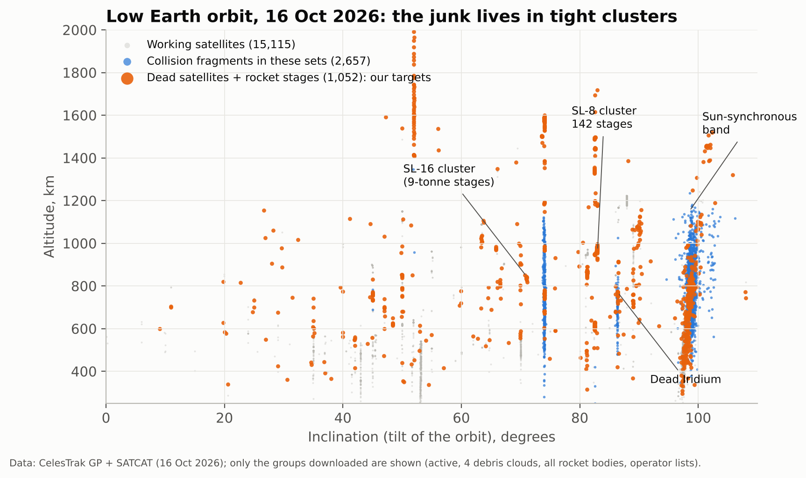
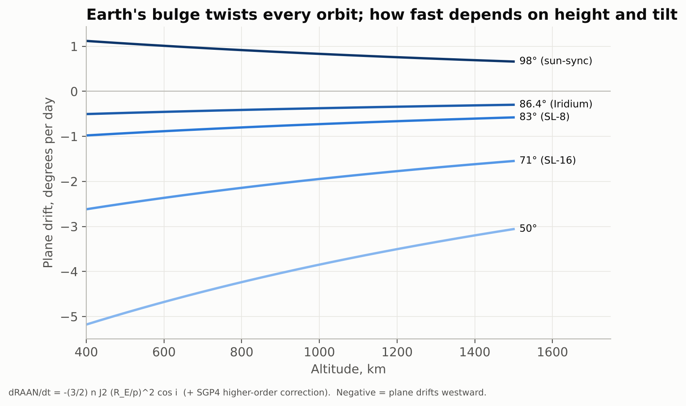
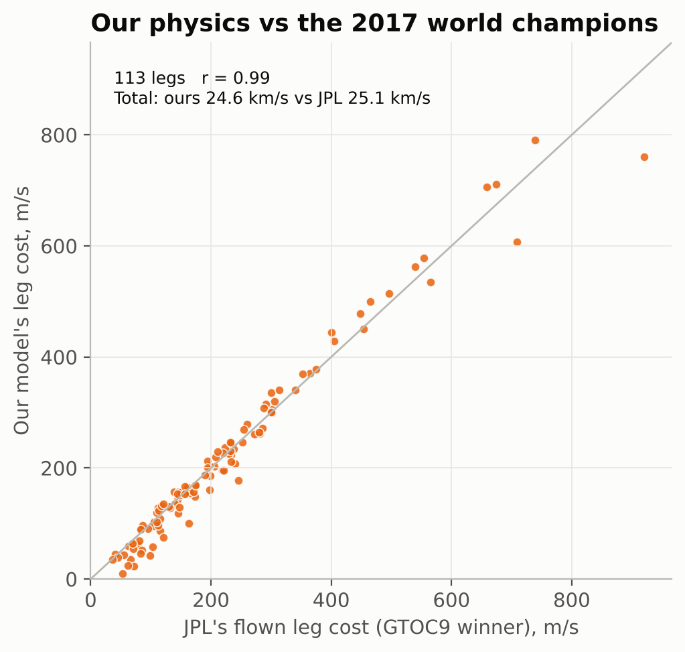
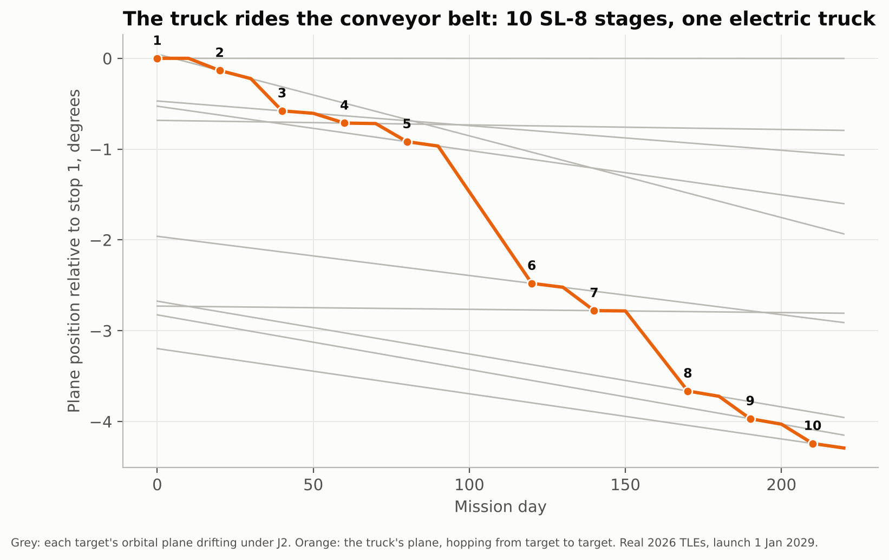
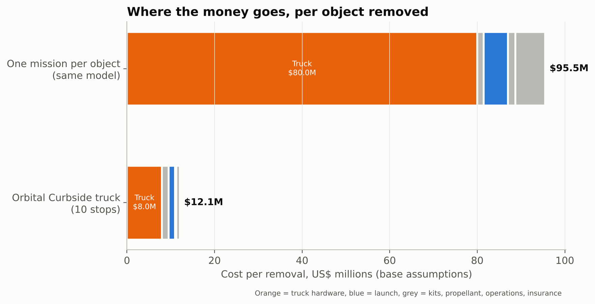
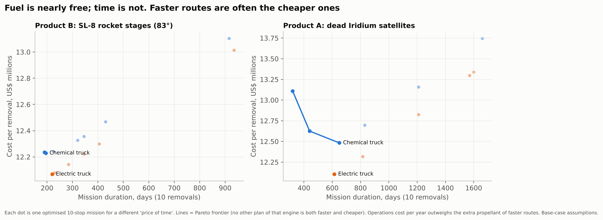
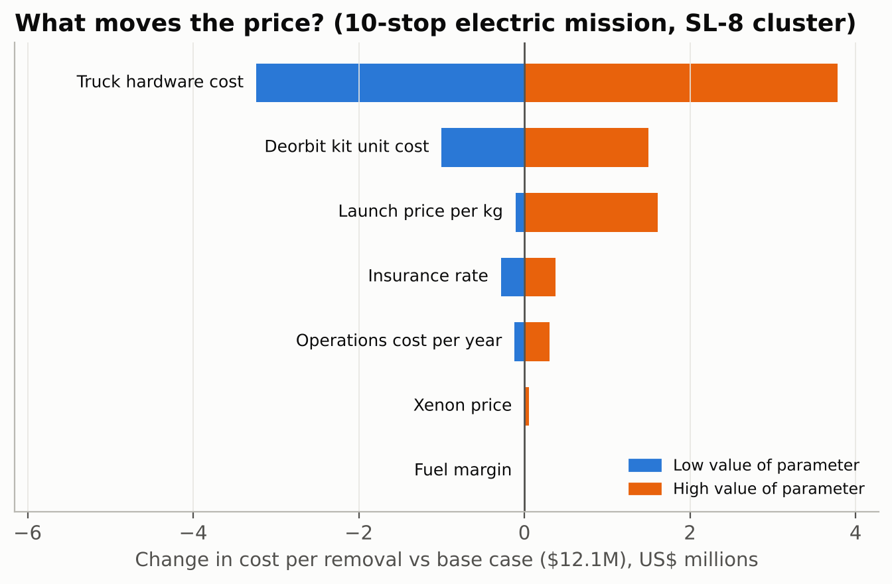
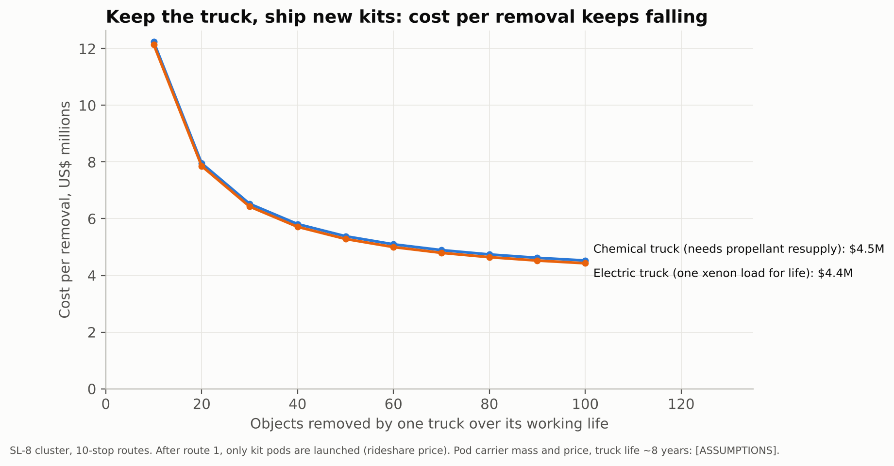

Plain-language summary of the research paper that follows · Brandon Graff · [__School__] · October 2026
Space is filling up with junk: dead satellites and old rocket stages that can collide and shatter into thousands of fragments. Removing even one piece today is a custom mission costing $40–93 million. We asked: what if one spacecraft could collect many pieces on a single trip, the way a garbage truck runs a route?
10dead rocket stages removed by one electric spacecraft in our simulated route
$12.1Mmodelled cost per removal, versus $96M doing one object per mission
2.2%difference between our physics and the 2017 world-champion (JPL) solution
The trick: Earth does the driving. Earth is slightly wider at the equator. That bulge slowly twists every orbit around the planet, and how fast depends on the orbit's height. Turning a spacecraft's orbit with rocket fuel is brutally expensive. So our spacecraft changes its height a little, waits while Earth twists its orbit into line with the next piece of junk, then hops over. At each stop it bolts on a small rocket "deorbit kit" that drops the junk into the atmosphere, where it burns up. Then it drives on.
What we built. A route-planning program that picks which objects to visit, in what order and when, using real orbits of today's catalogue (16 October 2026). We checked our physics against the winning solution of a 2017 European Space Agency competition on this exact problem, re-checked our routes with the official orbit predictor, and built a 3D simulation that flies the route.
What we found. A single electric spacecraft can remove 10 Soviet-era rocket stages in about 7 months, using only 56 kg of propellant for all the driving. Spreading the big fixed costs (the spacecraft, the launch and the team) over ten objects brings the modelled cost to about $12.1 million per object. A spacecraft that stays up for years and receives new kits brings it to about $4.4 million. Surprisingly, the choice of engine barely changes the price. What matters is how many stops one spacecraft makes, and that its electric engine never needs refuelling.
Being honest. The physics idea is not new: scientists published it between 2015 and 2026. What is new here is turning it into a price list on today's real debris. Our costs are estimates, and two numbers matter most and are still uncertain: what the spacecraft and the kits would really cost. Grabbing a tumbling, unprepared rocket stage has never been done. The first attempt is planned for 2027–28. We are now interviewing engineers and satellite operators to test our assumptions.
Orbital Curbside: Pricing Multi-Target Active Debris Removal with J2-Drift Routing on the 2026 Catalogue
Brandon Graff · [__School__] · DECA Innovation Plan 2026–27 · October 2026 · Code and data: github.com/brandongraff-dev/deca2026
Abstract. Active debris removal (ADR) is today bought one object at a time, at public contract values of $40–93M per object. Multi-target removal that exploits Earth's oblateness (J2 nodal precession) to align orbital planes "for free" is well established in the astrodynamics literature, notably in ESA's GTOC9 competition (2017), but it has not been turned into a public, customer-facing price. We build a reproducible route optimiser (closed-form drift-time legs, impulsive and Edelbaum low-thrust transfers, four metaheuristics plus dynamic-programming timing) and validate it against the winning JPL GTOC9 solution: across 113 legs our model's total delta-v is within 2.2% of JPL's (r = 0.99). We then apply it to the real 16 October 2026 catalogue. An electric servicer that attaches solid deorbit kits removes 10 SL-8 rocket stages from the 83° cluster in 220 days with 678 m/s and 56 kg of xenon. SGP4 re-propagation confirms the planned plane alignments to 0.06° (median). Under stated cost assumptions this yields $12.1M per removal (Monte Carlo P10–P90: $11.0–15.2M), versus $96M for one-object missions in the same model, and about $4.4M for a reusable servicer restocked with kit pods. Electric versus chemical propulsion changes the price by only a few percent. The economic levers are stops per servicer and reuse, while electric propulsion's advantage is operational: it never needs in-space refuelling.
1. The problem
About 47,080 objects are regularly tracked in Earth orbit, of which about 15,900 are working spacecraft; ESA's model estimates 68,450 objects larger than 10 cm [1]. ESA's 2026 environment report states that "even if no new satellites were launched, the debris population would continue to increase because fragmentation events generate debris faster than they can naturally reenter the atmosphere" [2], the self-sustaining cascade first described by Kessler and Cour-Palais [3]. A small number of massive derelicts dominates the long-term risk: McKnight et al. found that removing the 50 statistically most concerning objects, mostly Soviet-era SL-16 and SL-8 rocket stages, would roughly halve the collision risk they pose [4].
Regulation is tightening. The US Federal Communications Commission (FCC) requires LEO satellites launched after 29 September 2024 to be disposed of "as soon as practicable, and no later than five years after the end of the mission" [5]. Its July 2026 Part 100 order keeps the five-year rule and requires a disposal success probability of at least 0.9 per spacecraft [6]. In effect, up to one in ten satellites may fail to dispose of itself and still be compliant. Those failed satellites, plus the legacy rocket bodies no one owns any more, are the potential market for removal.
Removal is now being bought, but one object at a time: ESA's ClearSpace-1 (€86M, one object), JAXA/Astroscale ADRAS-J2 (about ¥13.2B, one rocket stage) and the UK's 2026 award to ClearSpace (about £61M for two satellites) [7–9]. NASA's 2023 cost–benefit study concluded that removal is rarely cost-effective at these prices, and noted that "disposable modules deployed from a mothership may provide the lowest cost option", an architecture it did not analyse [10].
2. Prior work, and what is new here
The physics is not new. ESA's 9th Global Trajectory Optimisation Competition (GTOC9, "The Kessler Run", 2017) asked teams to remove 123 sun-synchronous debris objects with multi-rendezvous missions that deliver 30 kg deorbit packages [11]. The winning JPL team removed all 123 with 10 missions (731.28 M€) using branch-and-bound searches that exploit nodal drift, beam search, ant-colony optimisation and a genetic algorithm [12]. Low-thrust multi-target removal using J2 drift was studied by Di Carlo, Romero Martin and Vasile [13], and a 2026 preprint by Iskender et al. formalises "drift-aware" tug logistics on the GTOC9 benchmark, within 1.55% of JPL's cost [14]. Target selection by collision risk is also established [15, 16].
What we add. We found no public work that (i) prices multi-target removal per object for customers, (ii) on the current catalogue, (iii) comparing an electric drift servicer, a chemical drift servicer and today's one-object missions in one consistent cost model, including (iv) a reusable servicer restocked by kit pods. Our contribution is this integration and business analysis, with a validated, open-source tool. It is not a new astrodynamics method.
3. Method
3.1 Data
Orbital elements come from CelesTrak's GP (TLE) data downloaded on 16 October 2026: active satellites, four major debris clouds, all rocket bodies and the legacy constellations of three operators. Metadata comes from CelesTrak's SATCAT, and masses from McDowell's GCAT [17, 18]. Elements are decoded with the official SGP4 implementation [19]. We identified "truck-friendly" clusters: many heavy objects with similar altitude and inclination but planes spread around the globe (Fig. 1, Table 1). Our counts match McKnight et al.'s published cluster sizes (for example, about 150 SL-8 stages near 950 km and 83° [4]), which cross-checks the data.

Fig. 1. Objects in low Earth orbit on 16 Oct 2026 (subset downloaded). Derelicts (orange) sit in tight clusters of inclination and altitude.
Cluster (16 Oct 2026)
Objects
Median kg
Total t
Drift °/day
Planes span
SL-16 (Zenit-2 upper stage) cluster
18
9,000
162.0
-2.12 to -2.10
317°
SL-8 (Kosmos-3M stage) 83 deg cluster
142
1,434
203.6
-0.76 to -0.74
356°
SL-8 74 deg / ~750 km cluster
50
1,434
71.7
-1.87 to -1.83
356°
SL-8 74 deg / ~1500 km cluster
45
1,434
64.5
-1.34 to -1.25
355°
Dead first-generation Iridium
24
662
15.9
-0.47 to -0.42
358°
Rocket bodies, sun-synchronous band
173
1,000
294.9
+0.74 to +1.19
359°
Table 1. Candidate clusters. Drift rates from the SGP4-consistent model.
3.2 The conveyor belt: J2 nodal precession
Earth's oblateness makes the right ascension of the ascending node Ω (the direction an orbital plane faces) drift secularly [20]:
dΩ/dt = −(3/2) · n · J₂ · (R_E / p)² · cos i, n = √(μ/a³), p = a(1 − e²)
The rate depends on altitude and inclination (Fig. 2): dΩ̇/da = −3.5 Ω̇/a and dΩ̇/di = −Ω̇ tan i. A sun-synchronous orbit at 800 km comes out at +0.985°/day, matching its definition. For the real catalogue we add a small correction table built from SGP4's own secular rates (second-order J₂² and J₄ terms). Without it, plane predictions drift by about 1° over 1,000 days (Section 4.3).

Fig. 2. Plane drift rate versus altitude for the inclinations of our target clusters.Fig. 3. Trading time for propellant on a real 19° hop between two SL-8 stages. The electric truck uses more Δv (slow spirals) but about 5× less propellant mass, and needs at least about 90 days per hop.
3.3 Transfer costs
The angle θ between two orbital planes follows from spherical trigonometry, cos θ = cos i₁ cos i₂ + sin i₁ sin i₂ cos ΔΩ. We use a common form for both engine types:
chemical (impulsive): Δv = √(v₁² + v₂² − 2 v₁ v₂ cos θ)
electric (Edelbaum [21]): Δv = √(v₁² + v₂² − 2 v₁ v₂ cos(πθ/2))
v₁, v₂ are circular speeds before and after. With θ = 0 both reduce to a small altitude change (52.45 m/s for 700 → 800 km, identical to a Hohmann transfer). A 10° plane change at 800 km costs 1.30 km/s, which is why waiting for drift is so valuable. Propellant follows the rocket equation, m_f = m_0 exp(−Δv / I_sp g₀). Electric spiral times use constant thrust: t = (m_0 I_sp g₀ / F)(1 − e^(−Δv / I_sp g₀)).
3.4 One leg: wait versus burn
Each leg from object A to object B in time T has four phases: spiral out to a drift orbit (a_d, i_d) → drift for time τ → spiral into B's orbit → ride along with B. The drift time is solved in closed form so the plane gap closes exactly:
This generalises the classic waiting time Δt = ΔΩ / |Ω̇₁ − Ω̇₂| to include spiral times t₁, t₂. If the gap cannot close within T, the remaining angle is removed by a plane change. Drift orbits are searched on a grid of altitude (600–1,500 km, avoiding the crowded shells below 600 km) and inclination (±3°). A fixed 20 m/s per stop covers final phasing and proximity operations. Fig. 3 shows the resulting trade between time and propellant for one real leg.
3.5 Which objects, in which order
Choosing and ordering 10 of the 142 SL-8 stages has about 2.4 × 10²¹ possibilities; ordering 10 fixed objects alone has 3.6 million. Every option changes as planes drift. We implemented beam search, simulated annealing (including moves that swap in unused objects), a genetic algorithm with order crossover, and ant-colony optimisation. All share one cost oracle. A dynamic-programming timer then chooses every leg's duration jointly, so a slightly more expensive hop can be accepted if it sets up cheaper hops later. The planner minimises Δv + λ·(mission days). λ, the "price of time", is derived from the cost model: an extra day costs one day of operations, and an extra m/s costs its propellant plus the launch of that propellant. This gives λ ≈ 11 m/s per day for the electric truck and ≈ 2.7 for the chemical truck.
3.6 Deorbit kits and the servicer
At each stop the truck attaches a kit, a small solid motor that lowers the object's perigee to 250 km (re-entry within months). Objects heavier than 5 t would instead get a controlled re-entry to 50 km. Kit mass follows from the rocket equation (I_sp = 285 s, 12 kg fixed plus 15% tankage, assumption): about 130 kg for a 1.4 t SL-8 stage, about 53 kg for a dead Iridium satellite, and about 870 kg for a 9 t SL-16. That is why SL-16 stages are not suited to a multi-stop truck. The electric servicer uses two Busek BHT-1500-class Hall thrusters (0.202 N total, I_sp 1,710 s) [22] and a 600 kg dry mass assumption, and spends 10 days at each stop assumption. The chemical comparison truck is identical except for a bipropellant engine with I_sp 320 s.
3.7 Validation
We test the model in three ways. (1) Physics: we re-cost all 113 legs of JPL's winning GTOC9 route using JPL's own endpoints, dates and durations. (2) Optimiser: we re-solve GTOC9's Mission 10 from scratch. (3) Real-world fidelity: we re-propagate every planned 2026 rendezvous with SGP4, which includes drag, and fly the drift orbits through a numerical integration with J₂, J₃ and J₄ gravity.
3.8 Economics
Mission cost = truck hardware + kits + launch (launch mass × price per kg) + propellant + operations (per year) + insurance. A 10% Δv margin is applied. Cost per removal is the mission cost divided by the number of objects. Each parameter has low, base and high values (Appendix A). We report a one-at-a-time sensitivity ("tornado") analysis and a 20,000-run Monte Carlo with triangular distributions. The reuse scenario keeps one servicer for ten routes: after the first launch, only kit "pods" are launched (an electric truck carries all its xenon from the start; a chemical truck also needs its propellant delivered).
4. Results
4.1 Benchmark against the GTOC9 winner
Across JPL's 113 legs our model totals 24.6 km/s against JPL's 25.1 km/s (-2.2%), with per-leg correlation r = 0.99 and 90% of legs within ±25% (Fig. 4). Rebuilding JPL's launch masses from their leg Δv reproduces their published values within 0.3 kg, which checks our mass bookkeeping. Flying the same legs with an immediate plane change instead of waiting for drift costs 2.0× more Δv. Our model is slightly optimistic, mainly because it ignores phasing and eccentricity, so we apply a 10% Δv margin in all costs.

Fig. 4. Our model versus JPL's flown cost for each of the 113 legs of the winning GTOC9 solution [12].
GTOC9 Mission 10 (10 objects; all scored by our model)
Total Δv, m/s
Launch mass, kg
JPL route, our model
1,464
3,478.6
Beam search
2,012
4,040.8
Simulated annealing
1,574
3,602.5
Genetic algorithm
1,574
3,602.5
Ant colony
1,847
3,908.4
Beam + annealing polish
1,362
3,387.7
JPL order + our DP timing
1,363
3,380.5
Table 2. Optimisers on GTOC9 Mission 10. JPL's actual flown launch mass: 3,438.6 kg.
On Mission 10 (Table 2), beam search followed by simulated annealing, starting from scratch, found a route as light as JPL's own order re-timed by our dynamic-programming timer, and lighter than JPL's route evaluated in our model. Because our model is about 2% optimistic, this shows the optimiser is competitive; it does not show that we beat JPL. No single method dominated: beam search alone and ant colony performed worst, and the hybrid did best.
4.2 Missions on the 2026 catalogue
10-stop mission, launch 1 Jan 2029
Engine
Δv m/s
Propellant kg
Kits kg
Launch kg
Days
SL-8 stages, 83°, ~960 km (Product B)
electric
678
56
1,327
1,982
220
SL-8 stages, 83°, ~960 km (Product B)
chemical
574
277
1,327
2,203
195
SL-8 stages, 74°, ~750 km
electric
not feasible at the economic price of time
–
979
–
–
SL-8 stages, 74°, ~750 km
chemical
1,028
470
978
2,048
400
Dead Iridium, 86° (Product A)
electric
3,937
225
526
1,351
555
Dead Iridium, 86° (Product A)
chemical
2,290
936
526
2,062
480
Table 3. Optimised missions on the real 2026 catalogue (simulated plans), each planned with the price of time derived from the cost model. At ~750 km and 74° the electric truck cannot keep pace at that price; it was feasible only on much slower plans in earlier runs.
The optimiser picks neighbouring objects whose planes are close and drift almost in step. Within the 142-object SL-8 cluster it finds ten stages whose planes lie within a few degrees of each other (Fig. 5), so each hop is cheap: the whole 10-stop route needs 678 m/s, of which 200 m/s is the fixed approach allowance. The truck's mass is dominated by the kits, not by propellant. For the 10-stop SL-8 route the kits weigh 1,327 kg against 56 kg of xenon.

Fig. 5. The optimised electric route through the SL-8 cluster. Grey: each target's orbital plane relative to stop 1; orange: the truck's plane as it hops between targets.
4.3 Validation with SGP4 and numerical integration
Route
Engine
Plane error at meeting, ° (median / max)
Drift-leg correction, m/s (median / max)
SL-8 stages, 83°, ~960 km (Product B)
electric
0.06 / 0.08
–
SL-8 stages, 83°, ~960 km (Product B)
chemical
0.05 / 0.08
2.6 / 10.4
SL-8 stages, 74°, ~750 km
electric
0.89 / 0.97
–
SL-8 stages, 74°, ~750 km
chemical
0.74 / 0.97
60.3 / 86.5
Dead Iridium, 86° (Product A)
electric
0.18 / 0.40
–
Dead Iridium, 86° (Product A)
chemical
0.16 / 0.35
7.9 / 17.0
Table 4. Planned rendezvous re-checked with SGP4; drift legs integrated with J₂–J₄ (chemical legs, which use instantaneous burns).
For the ~960 km SL-8 cluster, the target planes predicted by our model agree with SGP4 to 0.06° (median) at the planned meeting times. Correcting the drift legs in a full-gravity integration needs a median of 2.6 m/s, well within the per-stop allowance plus margin. Before we added the SGP4-consistent rate correction, the same check showed errors of about 1°. The lower 750 km SL-8 cluster shows errors over 1° because of atmospheric drag, which our planner does not model. Missions there would need to re-plan each leg with fresh tracking data, as real operators do.
4.4 Economics
Under base assumptions the 10-stop electric SL-8 route costs $121M, or $12.1M per removal (price $15.1M at a 20% margin). The same cost model gives $96M for a one-object mission, consistent with public contracts of $40–93M per object (Fig. 6, Fig. 7). The Monte Carlo puts the cost per removal between $11.0M and $15.2M (P10–P90). The cost per removal falls steeply with the number of stops: $33.3M at 3 stops, $21.2M at 5, $12.1M at 10, $9.8M at 15 and $8.3M at 20.
Fig. 6. Cost per removal versus objects removed by one truck (SL-8 cluster, base assumptions), with public single-object contract values.

Fig. 7. Where the money goes: fixed costs (mostly the truck) are split ten ways.
Electric versus chemical. The Pareto frontiers (Fig. 8) show the two engines within a few percent of each other in cost per removal for the dense SL-8 cluster. The electric truck launches about 10% lighter on the SL-8 route, but propellant is a small share of the cost. For the sparser Iridium target set, the chemical truck's launch mass grows sharply on fast routes (to 2,838 kg), and the electric truck is cheapest at a moderate pace. Time costs more than fuel: because operations cost about $5M per year, faster routes are often also cheaper, which is why the planner prices time explicitly.

Fig. 8. Mission duration versus cost per removal for many optimised 10-stop missions with different prices of time.
What moves the price (Fig. 9): truck hardware cost ($8.8–15.8M per removal across its range) dominates, followed by kit unit cost, launch price and operations. Xenon price and fuel margin barely matter. Reuse (Fig. 10): a servicer that flies ten routes over about 8 years, restocked by kit pods, reaches about $4.4M per removal. The chemical equivalent is similar in cost ($4.5M) but needs about 2,700 kg of propellant transferred in orbit over its life, against 480 kg of xenon carried from launch by the electric truck. That is the decisive operational difference.

Fig. 9. One-at-a-time sensitivity of cost per removal.

Fig. 10. Cost per removal for one long-lived truck restocked with kit pods.
5. Discussion: the business case
Two products follow from the analysis. Product A, Constellation Sweep, serves operators whose failed satellites cannot meet the five-year rule. Iridium's CEO publicly floated paying $10,000 per deorbit in 2019, while expecting real costs "in the millions or tens of millions, at which price I know it doesn't make sense" [23]. Our model narrows but does not close that gap, so pricing must be validated with operators. Product B, Rocket-Body Cleanup, serves agencies that pay to reduce collective risk, the role governments already play in the ESA, JAXA and UK contracts [7–9]. In both cases the value proposition is the same: removal priced like a garbage route, not a one-off moon shot. The strongest structural argument for the electric design is reuse without in-space refuelling.
6. Limitations
(1) Dynamics: circular, secular-only motion. Along-track phasing and proximity operations are an allowance, not simulated, and the planner has no drag (Section 4.3). (2) Capture: attaching kits to unprepared, tumbling rocket stages has never been demonstrated; our 10-day stop is an assumption. (3) Re-entry safety: uncontrolled re-entry of 1.4 t stages must be shown, object by object, to meet the 1-in-10,000 casualty-risk limit [24]; otherwise heavier controlled-re-entry kits are needed. (4) Costs: truck and kit costs are not public and dominate the result; all prices are model estimates, not quotes. (5) Optimisation: metaheuristics give good, not guaranteed-optimal, routes, and repeated runs vary by roughly ±10% in duration. (6) Data: we used the CelesTrak groups we downloaded, not the full classified catalogue, and our mass data come from public sources.
7. Future work
Interviews with operators, agencies and engineers to replace the assumptions in Appendix A. Collision-risk-weighted target selection (for example using McKnight's ranking [4]). Fleets of trucks sharing kit pods. Drag-aware re-planning for clusters below 800 km. A higher-fidelity low-thrust trajectory optimiser for the final routes.
References
ESA Space Debris Office, "Space Environment Statistics," DISCOSweb, updated 14 Oct 2026. https://sdup.esoc.esa.int/discosweb/statistics/
ESA, "ESA Space Environment Report 2026," 14 Sep 2026. https://www.esa.int/Space_Safety/Space_Debris/ESA_Space_Environment_Report_2026
D. J. Kessler and B. G. Cour-Palais, "Collision frequency of artificial satellites: The creation of a debris belt," J. Geophys. Res., 83(A6), 2637–2646, 1978.
D. McKnight et al., "Identifying the 50 statistically-most-concerning derelict objects in LEO," Acta Astronautica, 181, 282–291, 2021; and "An update of the Top 50 list," 9th European Conf. on Space Debris, 2025.
FCC, Second Report and Order, FCC 22-74 (Space Innovation; Mitigation of Orbital Debris), adopted 29 Sep 2022.
FCC, Report and Order, FCC 26-47 (Space Modernization for the 21st Century), adopted 22 Jul 2026.
ESA, "ESA purchases world-first debris removal mission from start-up," press release, 1 Dec 2020.
Astroscale, "Astroscale Japan secures contract for Phase II of JAXA's Commercial Removal of Debris Demonstration," 20 Aug 2024.
UK Government, ClearSpace selected for UK Active Debris Removal mission, 15 Oct 2026; SatNews, 15 Oct 2026.
T. J. Colvin, J. Karcz, G. Wusk, "Cost and Benefit Analysis of Orbital Debris Remediation," NASA Office of Technology, Policy, and Strategy, 10 Mar 2023.
D. Izzo, "Problem description for the 9th Global Trajectory Optimisation Competition," doi:10.5281/zenodo.570193, 2017; ESA Kelvins, "GTOC9: The Kessler Run."
A. Petropoulos et al., "GTOC9: Results from the Jet Propulsion Laboratory (team JPL)," Acta Futura, 11, 25–35, 2018, doi:10.5281/zenodo.1139152.
M. Di Carlo, J. M. Romero Martin, M. Vasile, "Automatic trajectory planning for low-thrust active removal mission in low-earth orbit," Adv. Space Res., 59(5), 1234–1258, 2017.
O. B. Iskender, L. Felicetti, K. Gokturk, D. Tellett, A. Baker, "Drift-Aware Multi-Target Space Tug Logistics Using Natural Orbital Precession," arXiv:2607.22974, 2026 (IAC-26).
A. Barea, H. Urrutxua, L. Cadarso, "Large-scale object selection and trajectory planning for multi-target space debris removal missions," Acta Astronautica, 2020.
G. Borelli, C. Colombo, "Space debris index definition for multi-purpose active debris removal mission design," Adv. Space Res., 77, 2026.
T. S. Kelso, CelesTrak GP data and SATCAT, retrieved 16 Oct 2026. https://celestrak.org
J. C. McDowell, General Catalog of Artificial Space Objects (GCAT), release of 15 Oct 2026. https://planet4589.org/space/gcat
D. A. Vallado, P. Crawford, R. Hujsak, T. S. Kelso, "Revisiting Spacetrack Report #3," AIAA 2006-6753, 2006; python-sgp4 2.27.
D. A. Vallado, Fundamentals of Astrodynamics and Applications, 4th ed., Microcosm Press, 2013.
T. N. Edelbaum, "Propulsion requirements for controllable satellites," ARS Journal, 31(8), 1079–1089, 1961.
Busek Co., "BHT-1500 Hall Effect Thruster" datasheet, accessed Oct 2026. https://www.busek.com/bht1500
C. Henry, "Iridium would pay to deorbit its 30 defunct satellites — for the right price," SpaceNews, 30 Dec 2019 (as quoted in ABA Business Law Today, Jan 2022).
US Government Orbital Debris Mitigation Standard Practices, November 2019 update.
Appendix A. Assumptions
Parameter
Low / Base / High
Source or status
Truck hardware
$50M / $80M / $115M
NASA OTPS 2023 estimates [10]; base assumed
Deorbit kit unit cost
$0.5M / $1.5M / $3M
Assumption, to validate in interviews
Launch price
$7,000 / $7,500 / $15,000 per kg
SpaceX rideshare price list (2026–27); NASA OTPS
Xenon price
$2,780 / $2,780 / $12,000 per kg
Analyst and industry sources
Operations
$3M / $5M / $10M per year
Assumption
Insurance
5% / 8% / 12% of hardware + launch
Assumption
Δv margin
10% / 10% / 25%
From the benchmark and validation results
Truck dry mass; stop time; approach Δv
600 kg; 10 days; 20 m/s
Assumptions
Kit motor
I_sp 285 s; 12 kg + 15% tankage
Assumption (small solid-motor class)
Kit pod carrier (reuse)
150 kg; $4M
Assumption
All code, data and figures are reproducible from the repository (README.md). Results were computed on 16 Oct 2026.